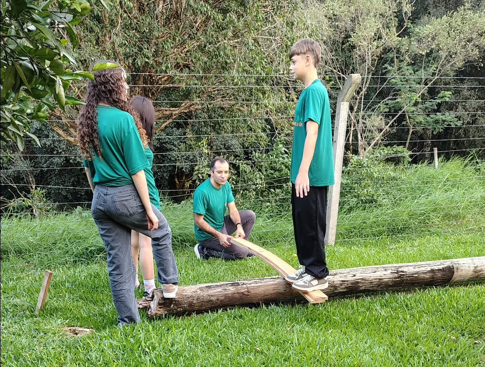
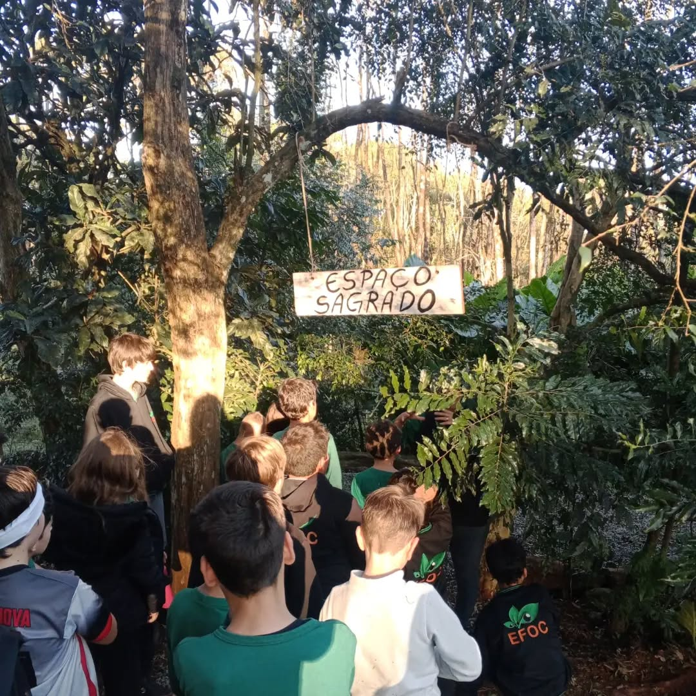
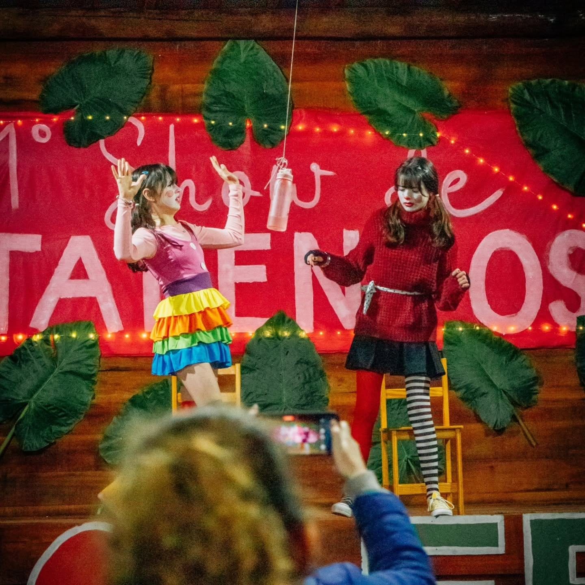
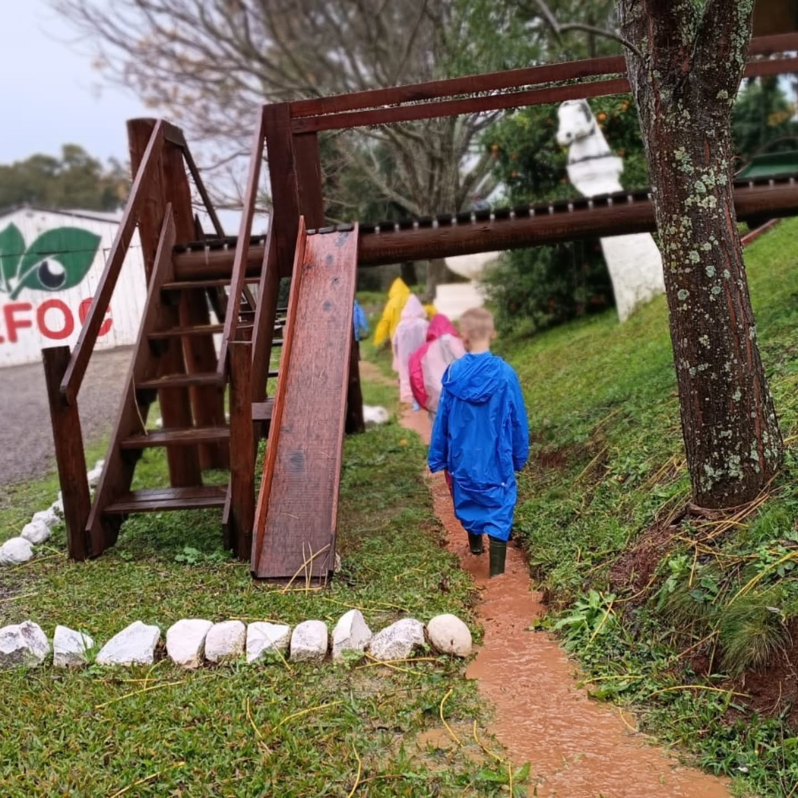
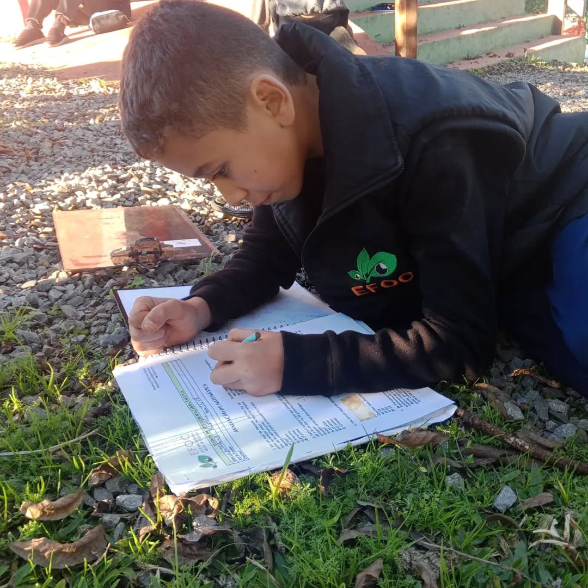
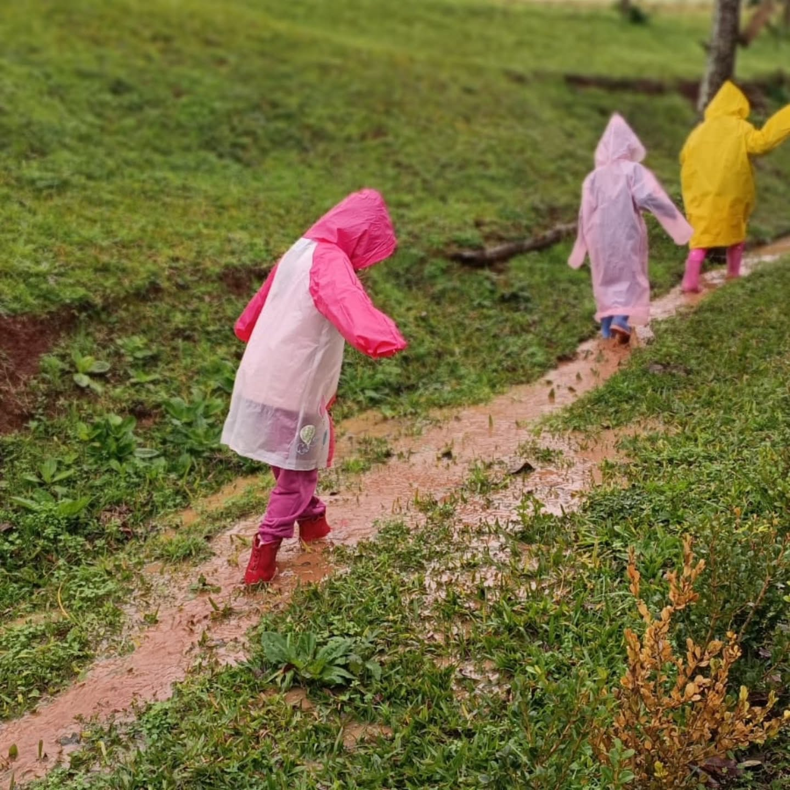
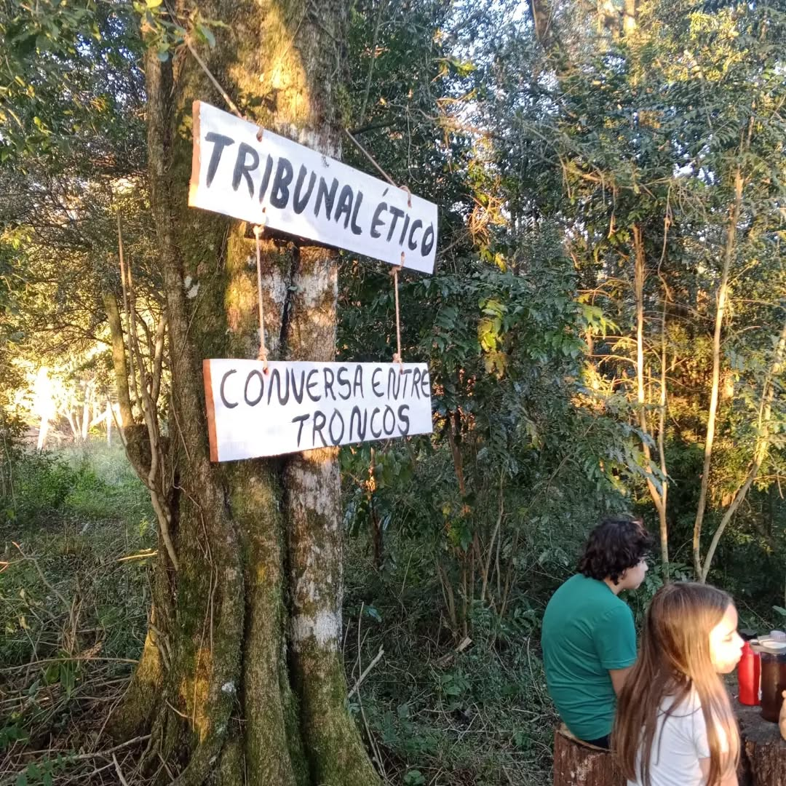

Na EFOC, o aprendizado vai além das paredes da sala de aula. Formamos corujeiros conscientes, autônomos e preparados para a vida.


A coruja observa com atenção, escuta em silêncio e enxerga onde outros não veem. É com esse olhar que a EFOC ensina: a floresta é sala de aula, laboratório, biblioteca e espaço de convivência.
Nossos alunos são os Corujeiros: crianças e jovens curiosos, que cuidam do lugar onde vivem, aprendem a conviver e assumem o protagonismo da própria jornada.
Aprender com a floresta. Criar para a vida.
Manifesto EFOC
Na EFOC, respeitamos e cumprimos integralmente as diretrizes da BNCC (Base Nacional Comum Curricular), mas de uma forma totalmente diferente e transformadora: com o apoio direto da floresta e do ambiente natural.
1. Despertar a curiosidade
2. Estimular o pensamento crítico
3. Promover o respeito à vida e ao meio ambiente
4. Formar alunos conscientes e protagonistas
Movimento, cultura e cuidado com o corpo em contato com a natureza.
Movimento, ritmo, musicalidade, expressão corporal e valorização da cultura em meio à natureza.
Conexão sensível com os animais, desenvolvimento de equilíbrio, coordenação, postura, empatia e autoconfiança.
Espaços da escola e atividades na floresta: experimentos, trilhas, rodas de conversa, arte e muito movimento.





Venha conhecer a floresta e conversar com a nossa equipe.